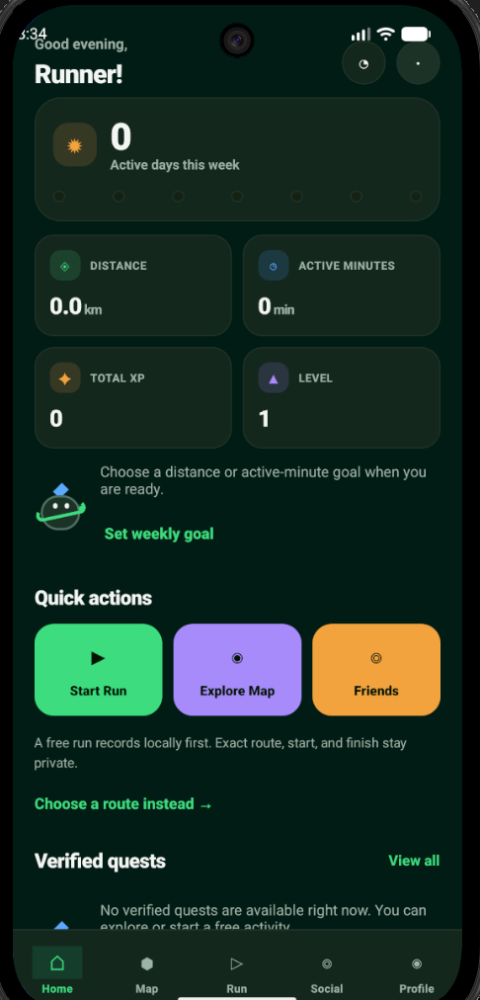
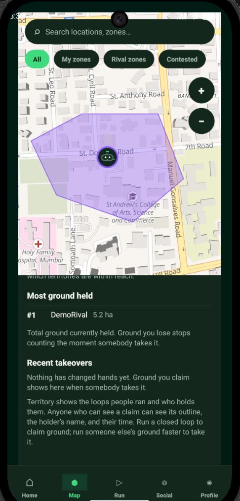
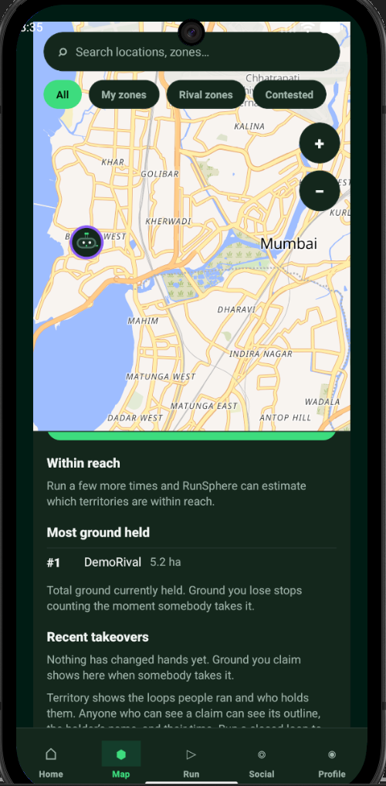

An end-to-end outdoor running platform that turns real-world movement into competitive territory control — engineered with Uber H3 spatial indexing, Isolation Forest anti-cheat, ALS quest recommendations, and strict privacy-by-design across an 11-package Turbo 2 monorepo.



Architecture
Geospatial Engine
When a runner completes a valid loop, the GPS trace is discretized into Uber H3 Resolution 11 hexagonal cells — each covering roughly ≈ 24.9 m edge length and ≈ 2,161 m² of real-world area. This resolution aligns perfectly with city-block scale pedestrian movement without excessive memory consumption.
Hexagons are chosen over bounding boxes and quad-trees for a critical reason: all 6 neighbors share equidistant centers, giving uniform adjacency that eliminates the diagonal-distance distortion of square grids. This makes area and boundary calculations far more geographically honest.
Once the loop's H3 cells are captured, the system runs a Breadth-First Search (BFS) graph traversal over the neighbor adjacency matrix whenever a rival carves through existing territory. It detects all resulting connected subgraphs, retains only the Largest Connected Component, and discards isolated fragments — preventing fragmented "islands" from cluttering the map.
Geodesic loop area is computed on the WGS-84 reference sphere using the spherical excess formula — not flat-plane Euclidean geometry — so area calculations remain accurate over real-world distances.
Loop Validation Pipeline
Scoring Algorithm
A naive speed comparison would let a sprinter running a tiny 200 m loop trivially conquer a 10 km endurance loop simply by running faster. The Effort-Grace algorithm prevents this by rewarding larger perimeter efforts with a non-linear speed bonus applied to the challenger's effective speed before comparison.
The result is a system where effort and exploration are intrinsically rewarded — not raw pace.
Grace Scale
| Challenger Perimeter | Grace Bonus | Effective Multiplier |
|---|---|---|
| 1× holder | +0% | 1.00× |
| 2× holder | +5% | 1.05× |
| 3× holder | +10% | 1.10× |
| ≥ 4× holder | +15% (cap) | 1.15× |
Machine Learning — System 1
The pipeline operates in two stages. First a rule-based hard filter in TypeScript applies deterministic hard limits on the raw GPS trace. Only activities that pass this gate are forwarded to the ML layer — keeping inference costs low.
The ML layer runs an unsupervised Isolation Forest (n_estimators=200, contamination=0.03) over 19 kinematic features. Isolation Forest is ideal here because anomalous movements — vehicle rides, e-bikes, GPS spoofing — require fewer random partition splits to isolate than the dense cluster of normal human running distributions.
Critically: the model never auto-bans or rejects a user. High anomaly scores flag the activity for human moderator review in the Admin panel, keeping the system fair and auditable.
Pipeline Stages
Machine Learning — System 2
Quest discovery uses an implicit-feedback Alternating Least Squares (ALS) matrix factorization model (factors=64, iterations=20) over a user-quest interaction matrix.
The interaction values are intentionally simple: 0 = unseen, 1 = accepted, 2 = completed. This keeps the signal honest without requiring explicit ratings — users express preference through action, not reflection.
At serving time, latent factor dot-product scores are computed for all candidate quests, then filtered to only those whose centroids fall within a 20 km Haversine bounding radius of the user's current coordinates. The user's location is passed at inference time and never stored in the training set.
ALS Design Decisions
Backend Engineering
The Fastify 5 API enforces end-to-end type safety through TypeBox schemas shared from packages/contracts — the same schema validates HTTP request bodies at runtime and generates TypeScript types at compile time, eliminating a whole class of drift bugs.
Verified run activities fan out to downstream workers via a transactional outbox pattern — the activity and its outbox event are written in the same Postgres transaction, then an async worker processes and delivers to progression, leaderboard, and push notification handlers. No external message broker required.
The worker cluster handles weekly immutable leaderboard snapshots (Asia/Kolkata timezone-aligned), monthly season resets, and a 21-day rolling window collusion detector that flags A↔B↔A reciprocal claim-trading pairs sharing ≥ 90% of territory.
Activity Ingestion
Security & Privacy
Local SQLite database encrypted on-device via expo-sqlite + SQLCipher. GPS buffers and tokens never exist in plaintext at rest — prevents unauthorized root-access extraction.
OS BiometricPrompt / Secure Enclave invoked at run ignition. The app only ever receives a boolean — biometric data is never accessed or persisted. Prevents device hand-off fraud.
Automatic server-side clipping removes 200 m from both ends of any published trace (Ghost Race, shared routes) — home and workplace addresses remain unexposed.
H3 indexes are stored in lexical sort order — never in traversal sequence. The time-series of movement is completely stripped; nobody can infer where a run started or ended.
A 21-day rolling window evaluates A↔B↔A reciprocal claim-trade patterns. Pairs sharing ≥ 90% of territory flag for review as artificial leaderboard boosting.
Crash reports, logs, and analytics contain only derived counters — never raw GPS coordinates. Nominatim geocoding is proxied server-side to prevent client IP exposure.
Full Tech Stack